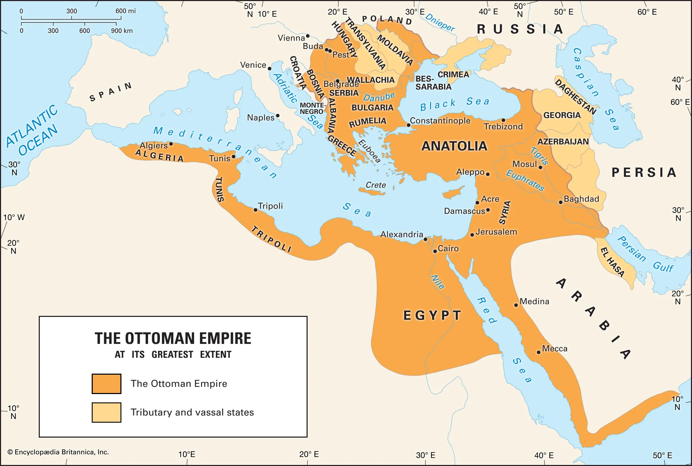

Ottoman Empire
- During the 1400s, the Mamluks continued to fall into decline
- At the same time, a new power was forming, the Ottoman Turks, who had taken over the Balkans and Asis Minor (Turkey)
- By 1516, the Ottoman sultan Selim I defeated the Mamluks and by 1517 he captured all of Syria and Egypt
- Under Ottoman rule, Syria was split into provinces: Damascus, Aleppo, Tripoli, and Sidon.
- Each province was ruled by a governor
- Damascus served as a special province for the organization of the pilgrimage to Mecca each year
- Taxation: the Ottomans used a Muslim law taxes including a land tax (kharaj), a poll tax (jizyah) on Christians and Jews, and customs taxes
- However, the Ottomans allowed for one to be exempt from kharaj as long as they served in the military
- Over time, the Ottoman taxation system fell into decline and tax collection was turned to tax farmers (multezim), who effectively became the landowning class
- Muslim judges/preachers, served as the interface between the government and the subjects in Ottoman society
- Under Ottoman administration, local communities regulated their own lives
- Most groups including the Bedouin tribes, Alawites, Ismailis were generally not interferred with if they paid taxes
- However, south of Damascus, a Druze community formed who refused to pay taxes to the Ottomans
- The Ottoman ulama was mostly made up of members of local religious families and were the leaders of the Muslim community
Map

Sources: [
1
,
2
,
3
]